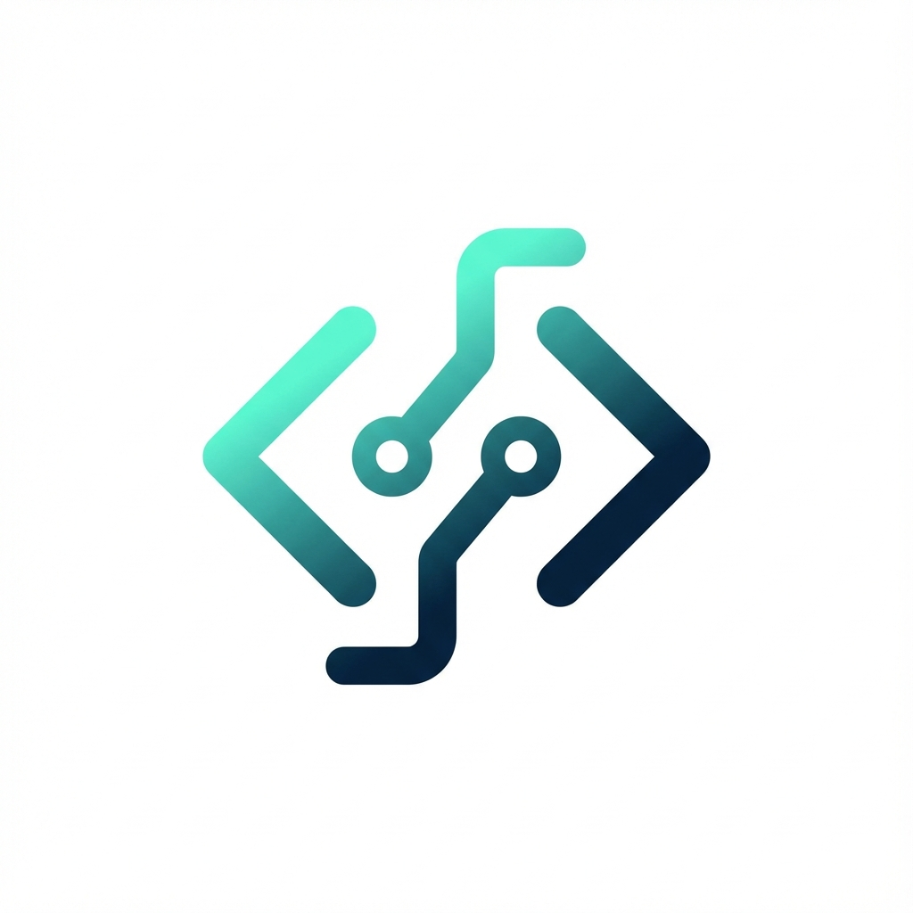
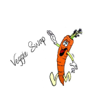

Lead Software Engineer with over 16 years of experience in software
development,
specializing in PHP, Laravel, Go(RestAPI), Python(RestAPI), React, JavaScript,
and modern
database technologies
such as
MySQL, PostgreSQL, and MongoDB. Proven expertise in designing scalable, secure,
and
high-performance web applications across diverse domains, including e-commerce, e-learning, and
enterprise systems. Adept at leading teams, integrating modern frameworks, and delivering
solutions
aligned with client goals and business objectives.
Leading development teams in building scalable, high-performance web applications.
Architecting
solutions using modern frameworks and technologies, ensuring code quality, security,
and best practices.
Mentoring junior developers and driving technical excellence across projects in
e-commerce, and enterprise domains.
Team Leader
IndaPoint Technologies Pvt Ltd
Jan 2011 - Nov 2022
Led cross-functional teams in delivering complex web applications and enterprise
solutions.
Managed full project lifecycle from requirements gathering to deployment.
Implemented agile
methodologies and DevOps practices to optimize development workflows and improve
team productivity.
Web Developer
Biztech Consulting & Solutions
Sep 2009 - Jan 2011
Developed and maintained web applications using PHP and JavaScript frameworks.
Collaborated with
design teams to create responsive, user-friendly interfaces. Optimized database
queries and improved
application performance through code refactoring and best practices implementation.
Junior Software Developer
InfoSoft
Aug 2008 - Aug 2009
Developed Delphi + SQL Server desktop apps and designed DataBase. Participated in
SDLC, version control and deployments.
Project Trainee
CMC Ltd
Feb 2008 - Jul 2008
Completed intensive training program in software development. Worked on real-world
projects, learning industry best practices and gaining foundational knowledge in web
technologies and databases.
02.
Education
Master of Computer Applications
Gujarat University
Aug 2005 - Aug 200866%
Bachelor of Computer Applications
M.S. University of Baroda
Aug 2002 - Jul 200560%
03.
Skills & Expertise
Programming Languages & Frameworks
PHP
Laravel
WordPress
Go(RestAPIs)
Python(RestAPIs)
JavaScript
React
HTML5
CSS3
Database & Cloud Technologies
MySQL/PostgreSQL
MongoDB
Docker
AWS
Core Competencies
Database Design & Optimization
Creating efficient database schemas and query optimization
RESTful APIs & Full-Stack Development
Building robust APIs, admin panels, and responsive front-ends
Agile & Scrum Methodologies
Leading teams using modern development practices
04.
Awards & Certifications
Academic Excellence
Achieved 1st rank in the 6th semester of B.C.A., M.S. University of Baroda
Employee of the Month
Awarded "Employee of the Month" at IndiaNIC Infotech and Indapoint for outstanding
performance and dedication
Developed a modern legal-tech platform enabling Dutch lawyers to perform AI-assisted legal
searches and analysis. Built a responsive Svelte frontend optimized for performance,
scalability, and security, and implemented Go-based backend services for data processing and
case scraping.
OnlyMaldives is a travel platform offering curated experiences, luxury resort bookings, and
comprehensive travel guides for Maldives tourism. I developed the admin panel and RESTful
APIs, ensuring efficient data management and secure communication between services. The
front-end was designed and implemented in Angular for an interactive user experience.
Third-party APIs were integrated for real-time booking, payment processing, and user
authentication. The platform is optimized for performance, ensuring a responsive and
seamless user experience across all devices.
A comprehensive learning and assessment platform by Cambridge University Press &
Assessment, aimed at enhancing personal and professional growth. It delivers practical,
real-world content and English language assessments to help learners build confidence and
stay prepared for a rapidly changing world.
The R&R Web App - KMI Loyalty Program streamlines internal employee rewards and
recognition. It offers seamless access via Microsoft Azure login and implements role-based
access control for administrators, super users, and regular users. Employees can engage with
a wall post feature akin to Facebook for sharing updates. Points are earned through Peer to
Peer recognition, Open Challenge participation, E-Learning completion, and tenure length.
Notably, the top 100 performers receive certificates quarterly, semi-annually, and annually
based on their leaderboard rankings.
Only the admin panel of this site was developed in Laravel, to create front/web, and for
mobile-app, other technologies are used, for web and mobile-app used APIs which were
developed in the lumen. This site is an online shopping site for makeup-related products,
the site provides all the features, required for a shopping site and makeup-related articles
published on the site, so users get an idea related to the product
LaravelMySQLLumen

theweedtube.com
IndiaNIC Infotech Ltd
Developer
TheWeedTube is a YouTube kind of site, especially for 21-year-old users, that allows users
to upload, share, view, like, dislike, watchlist, report, search, etc. functionalities with
videos related to smoking weed/tobacco. Elastic search, the third-party tool is used to
improve fast search functionalities. All the videos are stored in the other third-party tool
JWPlayer, List all videos on the site, using JWPlayers's API
IVY is developed in WordPress, with the help of some custom plugins and some free plugins.
This site is based on online shopping with the help of the WooCommerce plugin. Users can buy
flowers, chocolates, etc from this site.
MySQLWordPress
payperworkz.com
IndaPoint Tech. Pvt. Ltd.
Developer
The Functionality of this site is like Amazon , Flipkart , etc. But this site only sells
digital content/ documents . Seller/publisher signup, add digital products, buyer signup ,
and buy required material. Stripe's connect has been used to transfer sellers' payout.
LaravelMySQL
tsrnsports.com
IndaPoint Tech. Pvt. Ltd.
Developer
TSRNsports, leads the state of Texas in broadcasting High School and Junior College
athletics. Front-end developed in WordPress and back-end & REST APIs developed in
laravel. WordPress and phones both use APIs for display data like watching games or
listening to commentary of live games.
User can buy and view live-streaming of Florida Panthers' Stadium/Mezzanine/Den Rinks'
events and games. Users select the required schedule of events / games and pay for that.
They can view recorded videos on JWPlayer for 1 month to keep this recorded video permanent
in his/her profile, users can subscribe/ pay for that. User can view their recorded videos
with multiple platforms like smartphones, Amazon Fire TV , Roku TV , Xbox, etc. Curtain
up/down on the player, functionality is also given to prevent to view practice sessions of
players, the team can set the curtain up/down for live streaming on/off.
PHPMySQL
hockeylab.com
IndaPoint Tech. Pvt. Ltd.
Developer
Hockeylab is almost the same as maxxsports.tv, maxxsport.tv show curtain on a player when a
players practice session is going on, but the coach of the team can view practice session
using this site.
This site is a customized replication of appliviews (Applicant tracking system, indapoint's
product). Candidates can register, and apply for jobs, admin can view applicants, set
interviews for that , etc functionality provided by appliview.
This site is a customized replication of appliviews (Applicant tracking system, indapoint's
product). Candidates can register, and apply for jobs, admin can view applicants, set
interviews for that , etc functionality provided by appliview.
This is an online order system of shutters, a user/installer can log in / sign in and create
shutter images using color, shape, height, width, depth, inside/outside mount, frame design,
frames, side of frames, louver size, tilt bar, panel, hinge , etc. After the selection of
all the required parameters, we create an image of shutters. Users can pay and buy shutters.
PHPLaravelMySQL
ewell.se
IndaPoint Tech. Pvt. Ltd.
Team Leader
In eWell.se users can meet a health specialist online when they have time, without having to
travel to the clinic or reception. Meet specialists from home via video calls or text chat
through their computer, tablet, or Smartphone. Specialist adds their available time to Ewell
, clients book appointments with particular specialists, and appointments are held with
either video chat text chat , or personal meetings . For video chat I use tokbox.com and for
text chat use phplivesupport.com. eWell app is also available on Google Play and the Apple
App Store . Whichever REST APIs are used by apps that are all developed in PHP.
PHPMySQL
mfwebblearning.se
IndaPoint Tech. Pvt. Ltd.
Team Leader
This site has been developed for education in health and wellness. There are category-wise
categories wise videos. Each sub-category contains a practice exam related to the attached
video. To view videos and to give exams user has to pay. There is one final exam for each
top category . Users get diploma certificates after completing the final exam. This site is
like an online exam related to health and wellness.
PHPMySQL
ehelper.se
IndaPoint Tech. Pvt. Ltd.
Team Leader
This site has two types of users, outsourcers , and helpers, outsourcers add tasks related
to administration, auto, relocation, graphic designing , dog-sitting, music, garden help ,
etc., outsourcers have to pay to add task, helper bids to added task. Outsourcers will
accept affordable and reasonable bids . A rating kind of facility is also added to the site
to choose proper outsourcers and helpers.
PHPMySQL
paleoreceptboken.se
IndaPoint Tech. Pvt. Ltd.
Team Leader
Paleoreceptoboken.se offers users simple and healthy recipes for healthy meals. Admin
uploads recipes book at admin side, a user pays either of way Card or SMS, as soon as the
payment completed, a user gets an email attached with this .pdf file recipes book.
PHPMySQL

veggieswap.com
IndaPoint Tech. Pvt. Ltd.
Team Leader
Veggie Swap helps users connect and share with growers in their local area and around the
world. Veggie Swap is an online harvest exchange and social network for home gardeners.
Veggie Swap was developed with phofox , phpfox provides a marketplace module, using
marketplace module, I have developed an ad marketplace module to fulfill the requirements of
the client.
PHPsocialengine.netMySQL
pplanner.se
IndaPoint Tech. Pvt. Ltd.
Team Leader
Pplanner is a programming interface to the internet. The program is designed primarily to
deal with extra staff employed by the hour. The staff selects, via their availability (if
they can work). The employer booked staff via phone contact, SMS , and/or email. Employers
save time and reduce their stress. Might be focused on regular tasks instead of chasing
extra staff that the employer did not even know if it could work. In Pplanner reservation
staff who can work fast and easily ! Pplanner also includes other features such as message
boards, instant messaging features with SMS-up , and vacancy composition of the working
period. The staff are categorized according to their skills. Working sensors can quickly see
if any skills missing while it's quick and easy to find the right people for the right task.
PHPMySQL
pplannermini.se
IndaPoint Tech. Pvt. Ltd.
Team Leader
Pplanner mini is a service customized to quickly coat the staff vacancies that arise in an
employer's company. One of the staff is sick and must be replaced. Utilize Pplanner-Mini to
quickly reach out to all employees via SMS and email. Pplanner mini keeps track of when
workers report in while you take care of other more important tasks. As soon as an employer
in the workforce reports that they can work on a broadcast vacancy, a worker will receive a
message via SMS. When employers wish for employees' results and select a suitable candidate
for the job.
PHPMySQL
dandyville.se
IndaPoint Tech. Pvt. Ltd.
Team Leader
Dandyville.se is a website that uses product feed files to add products to the website. This
different product feed file is added by the admin when creating new sellers. This site can
have one seller on one product and many sellers for other products. If two sellers have the
same product it will be the prioritized sellers' product that will be visible. This site
also has links from the product page to the seller product page. This way we can gather a
lot of traffic to Dandyville.se and then charge the sellers X amount for every click to
their website. The seller is usually a webshop with products.
PHPMySQL
shapy.se
IndaPoint Tech. Pvt. Ltd.
Team Leader
This site is for Sweden users. We can call this site an online gymnasium. Users register
here and pay either by credit card or through SMS. Admin user uploads gym trainers' videos
to Vimeo. Users can watch videos according to category. The user can be either a single user
or a company. All videos are private videos and uploaded to Vimeo and they fetch with the
help of Vimeo apis.
PHPMySQL
pounced.com.au
IndaPoint Tech. Pvt. Ltd.
Developer
This site is for Australian users . This site brings deals and offers for the user. Users
select their city and buy the required deals. As soon as the payment is completed deals'
coupon and invoice hit in their email account. Every weekday comes new deals. Subscribed
users of this site get emails related to deals with the help of MailChimp . Email template
generated at admin site and set in MailChimp . The admin side contains lots of reports and
graphs for admin users .
Eyeeco is a USA-based online shopping site. Which sells Goggles, moisture-release eyewear ,
Silicone Sleep Shields, Accessories related to products , etc. Users can buy desired color
products and make payments using the payment gateway. All the products are handled from the
Admin site.
Gangaji Foundation is based in the USA. This site handles two major modules online shopping
and online event participation etc. In online shopping CDs , DVDs , Books , etc buy user
from front-end and in online Event module contains event registration, online meetings,
small group series, small group retreats, etc. According to the event, the user pays for
that. Everything is handled from the Admin site
PHPMySQL
hubcrm.com.au
Biztech Consultancy
Developer
This site was developed in SugarCRM. Email templates , Orders, Services, Categories,
Communications , etc. are the main modules of this site. These all modules are custom
modules that are developed by me. Users can subscribe to the services and make the
subscription payment by PayPal. The communication section is like a chat log. The user and
admin (advisor) chat with each other regarding services and problems . Even I made many
changes as per user requirements in existing modules which have already been provided by
SugarCRM.
PHPMySQLSugarCRM
sugar.snappromotions.com
Biztech Consultancy
Developer
This site was developed in SugarCRM. The snap promotion contains two major parts, one is
snap , and the other is love promos. Sugar itself gives many modules. My main job in this
project is to manipulate modules as per user requirements . Add some user-required fields,
remove some unnecessary fields, and make email functionality. Made some fields mandatory
etc. are the main job.
PHPMySQLSugarCRM
upsac.org
Biztech Consultancy
Developer
The main thing of this site is Pier (dock/port of sea sour). Using Google Maps multiple
Piers are displayed on the main page of the pier. All Google Maps pins are set from the back
end . Users will give ranking, comments , etc to each pier from the front end . For the Pier
survey , there are some questions/answers at the front end . Pier , there are different
questions and answers which all things are handled by the admin side. The Pier section is
one kind of plugin (like Pages, Posts , etc of Word Press) at the back-end side.
PHPMySQL
winehunter.com
Biztech Consultancy
Developer
The winehunter.com is an online shopping cart site. Users can buy wine, beer, wine
accessories etc from this site. The Virtuemart module was installed and manipulated by me.
This site is used for payment methods as PayPal Process. Not the whole site was developed by
me only the shopping cart section was developed by me as per user requirements .
The djmserver.com/music is an online music site. User can register, create their playlists,
and listen to the songs. Playlists are maintained by the user. As well as user can download
.mp3 and .wav format songs. To save a playlist with a popup window, to display the
information about songs on the right side’s panel , etc. thing developed by me.
PHPMySQLJoomla
oxfordandbeamount.com
Biztech Consultancy
Developer
This site is for UK and Ghana base solicitor’s company (Oxford & Beamont). This site is
a very huge CMS site. It contains too many pages. Main-menu, sub-menu , and sub-sub-menu,
content pages, newsletters, email templates , events, pdf upload, article upload facility,
dashboard, career opportunities , etc thing handled from the admin side. The user has been
registered on the site. Then they will download the pdf files, take part in events, job
seeker apply with their resume , etc. things done from the front side.
PHPMySQL
choirshowcase.com/vote
Biztech Consultancy
Developer
This site was developed for four cities’ churches in the USA. The Choirshowcase.com/vote had
developed to vote for songs that had been sung by boys and girls in church. Which song got
the highest votes and which song got the lowest votes this kind of information is displayed
on the admin side. To give a vote to a particular showcase users have to register at the
front side.
The phase3productions.com site was developed in WordPress. It is a CMS site. Admin can
maintain Top menus, left sidebar, bottom panel , and content pages from the admin part, as
per their requirement.
PHPMySQLWordPress
bfmt.com.br
Biztech Consultancy
Developer
The bfmt.com.br site was developed in Cake PHP. It is a CMS site. Admin can maintain left
menus, bottom panel , and content pages from the admin part, as per their requirement. This
site was developed for Listing purposes . Listing likes lands etc.
The exactmining.com.au site was developed in core PHP. It is a CMS site. Admin can maintain
the left menu, news panel, bottom panel , and content pages from the admin part, as per
their requirement.
PHPMySQL
CAMIS
Infosoft
Developer
The CAMIS is a C & F Management Information System. This is the common software program
for all distributors in India. In India, there is different software for every distributor.
All the data of these distributors are dynamically imported and mapped in these CAMIS and
reports are generated in the format of MTD (Month To Date) and YTD (Year To Date).
Delphi7SQL Server
Sales Force Automation
Infosoft
Developer
The SFA contains all the basic information of the Doctors, MR, AFM, RBM, ZBM, &
Stockiest and maintains the relations between them. Using SMS : MR, AFM, RBM, and ZBM
Register their Day plan, Leave details , Actual Calls, Campaign to the Doctors, Free
medicines samples given to the Doctor , and generate summary reports day by day or whole
months of all the users.
Delphi7SQL Server
Visualize System
Infosoft
Developer
The Visualize system contains information regarding Doctors, Products , and Images of the
Products. Here MR using images creates a slide show for every doctor and advertises the
products of their company.
Delphi7MS Access
Estimation Generation System
Infosoft
Developer
The Estimation Generation System generates the Estimation for their clients. Including
complexity factor and men hours , it generated the estimation report. A report is just like
a quotation.
Delphi7SQL Server
Finance Management System
CMC Ltd.
Developer
The finalization of pension and other benefits calculation and orders generation are done at
the Directorate of Pension and Provident fund office, Gandhinagar. Pension Processing is a
part of the Finance Management System being developed for DPPF.
JSPServletOracle
Variable Operating Cost System
IPCL
Developer
Generating the Variable operating cost for every month and also for the Whole year “YTD”
(Year To Date) for each of the 20 Plants in this Baroda complex. It should handle the
process of entering, editing , and displaying the required data from the database. It should
generate a summary report for all plants too.